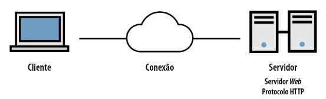

Programação Web
Unidade 1
Conceitos do HTML
- Ambiente Cliente/Servidor: é uma estrutura de rede que separa os dados e o processamento de recursos. Nessa estrutura, um programa de computador, chamado cliente, solicita um recurso ou serviço a outro programa, o servidor, que responde com as informações solicitadas.

- Elementos utilizados pelo Cliente / usado pelo Servidor
Cliente:
- HTML (do Inglês: Hyper Text Markup Language. No Portugiês: Linguagem de Marcação de Hipertexto): é uma linguagem de marcação que serve para criar a estrutura e o conteúdo de páginas web.
- CSS (Folha de Estilo em Cascatas): é um código em que você pode fazer alterações rápidas de layout, como definição de cores e fontes.
- JavaScript: é uma linguagem de programação que permite a criação de páginas web interativas, adicionando comportamento dinâmico a sites.
- XML (Extensible Markup Language): permite definir e armazenar dados de maneira compartilhável.
Servidor:
- Banco de dados: é um lugar onde você guarda os dados que precisa para o seu software, como nomes, endereços, preços, pedidos, etc. Um banco de dados é feito de tabelas, que são como planilhas, onde cada linha é um registro e cada coluna é um campo.
- JSP (JavaServer Pages): é uma tecnologia de programação web que permite criar páginas dinâmicas usando a linguagem Java.
- ASP.NET: é uma tecnologia da Microsoft que permite a criação de aplicações web dinâmicas e interativas. O ASP.NET é baseado no Framework .NET, que oferece cerca de 3000 classes para serem utilizadas nas aplicações.
- O que é HTML?
- A World Wide Web (Web ou "www") é uma rede de recursos e serviços de informação.
- Ela serve-se de três mecanismos, de modo a fazer com que esses recursos estejam legivelmente disponíveis à audiência mais vasta possível:
- Um esquema uniforme de atribuição de nomes, de forma a se localizar os recursos na Web (ex.: URIs);
- Protocolos, para o acesso aos recursos nomeados através da Web (ex.: HTTP);
- Hipertexto, para uma navegação mais fácil através dos referidos recursos (ex.: HTML);
- Os laços entre os três mecanismos evidenciam-se através desta especificação.
- Introdução ao URL
- Todos os recursos disponíveis na Web possuem um endereço, o qual poderá ser codificado por um Identificador de Recursos Universal, ou "URI" (Universal Resource Identifier).
- Os URIs são de uma forma geral constituídos por três partes:
- O esquema de nomeação do mecanismo usado para se ter acesso ao recurso;
- O nome da máquina de hospedagem desse recurso;
- O nome do próprio recurso, atribuído na qualidade de trajeto (path).
Por exemplo:
- No HTML, os URIs são usados para:
- Fazer uma ligação a um outro documento ou recurso, (ver os elementos A e LINK);
- Fazer uma ligação a uma folha de estilo ou script (ver os elementos LINK e SCRIPT);
- Incluir uma imagem, objeto ou applet numa página, (ver os elementos IMG, OBJECT, APPLET e INPUT);
- Criar um mapa de imagens (ver os elementos MAP e AREA);
- Submeter um formulário (ver FORM);
- Criar um documento com molduras (ver os elementos FRAME e IFRAME);
- Citar uma referência externa (ver os elementos Q, BLOCKQUOTE, INS e DEL);
- Fazer referências a convenções de metadados descrevendo um documento (ver o elemento HEAD).
- W3C
- A World Wide Web Consortium (W3C) é o órgão responsável por recomendar padrões de desenvolvimento para a internet. Por meio destes padrões se pode classificar web sites de acordo com suas características técnicas, indo além do visual e navegadores, de acordo com sua capacidade em atender aos padrões definidos.
- Para se publicar informação de distribuição global, é necessário utilizar-se uma linguagem de compreensão universal, uma espécie de Língua de publicação “Mãe”, a qual possa ser potencialmente usada e compreendida por todos os computadores.
- O HTML dá aos autores a possibilidade de:
- Publicar documentos online contendo cabeçalhos, texto, quadros e tabelas, listas, fotos etc.;
- Recuperar ou retirar informações online, por intermédio de ligações de hipertexto, clicando num botão;
- Concepção de formulários para efetuar transações com serviços remotos, para o uso na busca de informação, efetuar reservas, encomenda de produtos etc. (W3C, 2018).
- Regras HTML Tag
- Tags HTML consistem em comandos que aparecem entre colchetes angulares (< >);
- Tags HTML não são case sensitive;
- Tags HTML quase sempre vêm em pares.
- Exemplo:

- Texto entre < html > e descreve a página web;
- O texto entre < h1 > e < /h1 > é exibido como cabeçalho;
- O texto entre < p > e < /p > é exibido como parágrafo.
Unidade 2
Fundamentos de CSS
- O Que é CSS?
- A partir da versão 4.0 do HTML, o World Wide Web Consortium (W3C) incorporou o CSS (Cascading Style Sheet, ou Folha de Estilo em Cascatas), com a finalidade de se encarregar de toda a apresentação visual de um site, alterar elementos como fonte, cor e tamanho de textos, espaçamento entre blocos, enfim, todo o aspecto estético de uma página web.
- A utilização do CSS trouxe vários benefícios e, entre eles, podemos citar:
- Garantir flexibilidade e controle dos elementos na página;
- Simplificar a criação de páginas web;
- Permitir que a aparência e o layout de todas as páginas de um site sejam alteradas editando-se, com isso, um único arquivo (folhas de estilo externas);
- Garantir maior flexibilidade e controle nas especificações do site, entre outros.
- Sintaxe CSS
- O CSS utiliza uma estrutura de sintaxe simples, na qual a regra é a unidade básica de uma folha de estilo e é composta de duas partes principais: um seletor e uma ou mais declarações, como apresentado na Figura 1.

- Nessa definição dos componentes de uma regra CSS, temos:
- Seletor: é o elemento HTML que se deseja criar o estilo;
- Declaração: determina os parâmetros do estilo e consiste em uma propriedade e um valor;
- Propriedade: define a característica do seletor que será alterada;
- Valor: refere-se à quantificação ou qualificação de propriedade
- Uma regra pode conter várias declarações separadas por ponto e vírgula. Veja o exemplo a seguir:

- Seletores Válidos
- Os seletores são componentes HTML que desejamos modificar e estilizar, por meio do uso do CSS. Dentre os vários existentes, o Quadro 1 apresenta três dos principais seletores utilizados para criar estilos para um elemento do HTML.

- Vejamos, a seguir, um exemplo contendo o uso desses seletores:

- Vinculando Folhas de Estilo a Documentos
- Não basta que você defina uma regra CSS. É preciso informar ao documento onde ela se encontra. As folhas de estilo podem ser utilizadas de três maneiras diferentes:
- Estilo externo;
- Estilo interno;
- Estilo inline.
- O estilo externo é ideal quando a formatação deve ser aplicada a várias páginas. Com um arquivo externo, você pode alterar um formato e ele será aplicado automaticamente em todo o projeto.
- Um estilo externo pode ser escrito por qualquer editor e não deve conter nenhuma tag HTML. O arquivo deve ser salvo com a extensão .css e pode ser vinculado a um documento HTML usando o elemento link, que deve estar contido na da seção head.
- Veja o exemplo a seguir:

- Lembre-se de que o atributo href deve apontar exatamente o endereço no qual se encontra o arquivo que contém a folha de estilo criada. Veja a seguir um exemplo de uma folha de estilo salva no arquivo estilo.css:

- O estilo interno é usado na própria página HTML, sendo definido na seção head com o emprego do elemento style. As regras de estilo são definidas dentro das <i>tags <style> </style>, como mostra o exemplo a seguir:

- Veja um exemplo a seguir:

- Estilizando Documentos
- Como vimos no começo desta Unidade, as propriedades são utilizadas para definir características que serão aplicadas aos elementos HTML. A seguir, veremos algumas dessas propriedades e como elas alteram o layout de uma página web.
- Background
- As propriedades do background são usadas para definir uma cor ou uma imagem de fundo e estão listadas a seguir:
- Background-color;
- Background-image;
- Background-repeat;
- Background-attachment;
- Background-position.
- A propriedade background-color especifica a cor de fundo do elemento. Por exemplo:

- Já a propriedade background-image define uma ou mais imagens a serem usadas como fundo para o elemento.
- Por exemplo:

- A propriedade background-repeat pode ser utilizada conjuntamente para repetição da imagem de fundo:
- Repeat: a imagem é repetida na vertical e na horizontal, até o preenchimento da área do elemento;
- Repeat-x: a imagem repetida somente na horizontal;
- Repeat-y: a imagem repetida somente na vertical;
- No-repeat: a imagem é inserida apenas uma vez no plano de fundo. Pode ser utilizada de modo que a imagem não atrapalhe o texto, como o exemplo da Figura 2:

- Nesse exemplo, a imagem de fundo é mostrada numa posição de modo que ela não perturbe o texto. O código CSS utilizado é mostrado a seguir:

- Perceba que, para obtermos o efeito desejado, foi necessário utilizar uma nova propriedade, o background-position que indica a posição na qual a imagem de fundo será inserida.
- Alguns dos valores possíveis dessa propriedade são:
- Left top: à esquerda superior;
- Right center: à direita e ao centro;
- Center bottom: ao centro inferior.
- Fontes e Texto
- Quando o desejamos formatar a exibição de textos, as propriedades CSS geralmente se enquadram em duas categorias:
- Estilos de fontes: afetam a fonte do texto, como, por exemplo, tamanho, negrito e itálico, entre outros;
- Estilos de layout de texto: afetam o espaçamento e outros recursos de layout do texto, como, por exemplo, o espaço entre linhas e o alinhamento do texto dentro de uma caixa de conteúdo.
- Estilos de Fontes
- A propriedade font define família , tamanho e estilo do texto:
- Font-family;
- Font-style;
- Font-size.
- A família da fonte de um texto é definida com a propriedade font-family, cujo valor (nome da fonte) é uma string ou uma lista de strings separadas por vírgula. Procure sempre terminar a lista com uma fonte genérica, que se destina a uma possível falha nas escolhas do programador.
- Veja o exemplo a seguir:

- A propriedade font-style tem 3 valores:
- Normal: a própria fonte;
- Italic: itálico;
- Oblique: muito similar ao itálico, porém, menos utilizado.

- Já o tamanho do texto é definido pela propriedade font-size, que pode ter um valor absoluto ou relativo:
- Valor Absoluto
- Define o texto a um tamanho especificado;
- Não permite que o usuário altere o tamanho do texto em todos os navegadores (ruim por razões de acessibilidade);
- O tamanho absoluto é útil quando o tamanho físico da saída é conhecido.
- Valor Relativo
- Define o tamanho relativo aos elementos;
- Permite que o usuário altere o tamanho do texto em navegadores.
- A seguir, temos um exemplo que se utiliza de valores relativos e absolutos:

- Estilos de Layout de Texto
- Completando a formatação de layout de texto, as propriedades que veremos são:
- Color: é utilizada para configurar a cor do texto:

- Text-align: é usada para especificar o alinhamento do texto à esquerda, direita, centralizado ou justificado:

- Text-decoration: é frequentemente utilizada nos links para configurar ou remover decorações do texto:

- Text-transform: é usada para especificar o uppercase e lowercase nos textos:

- Text-indentation: é usada para definir um espaçamento horizontal antes do início da primeira linha do texto, em outras palavras, uma indentação da primeira linha ou parágrafo: